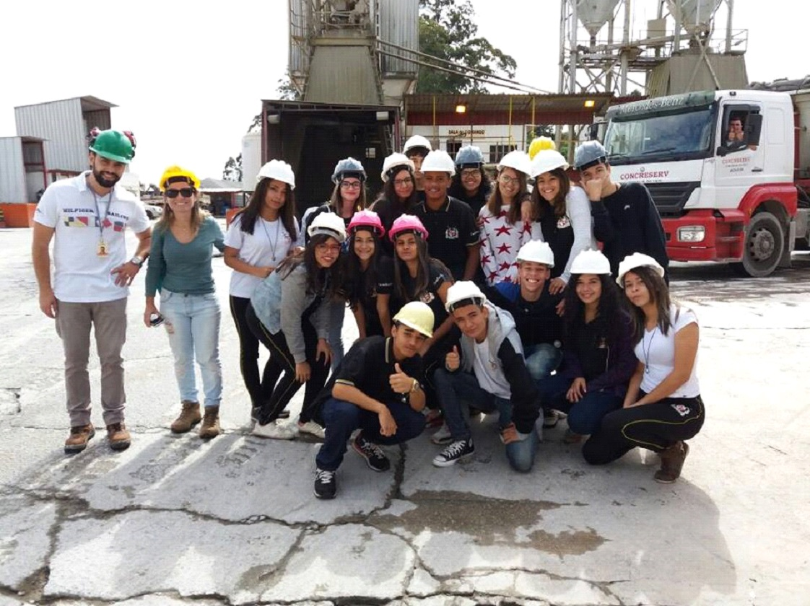
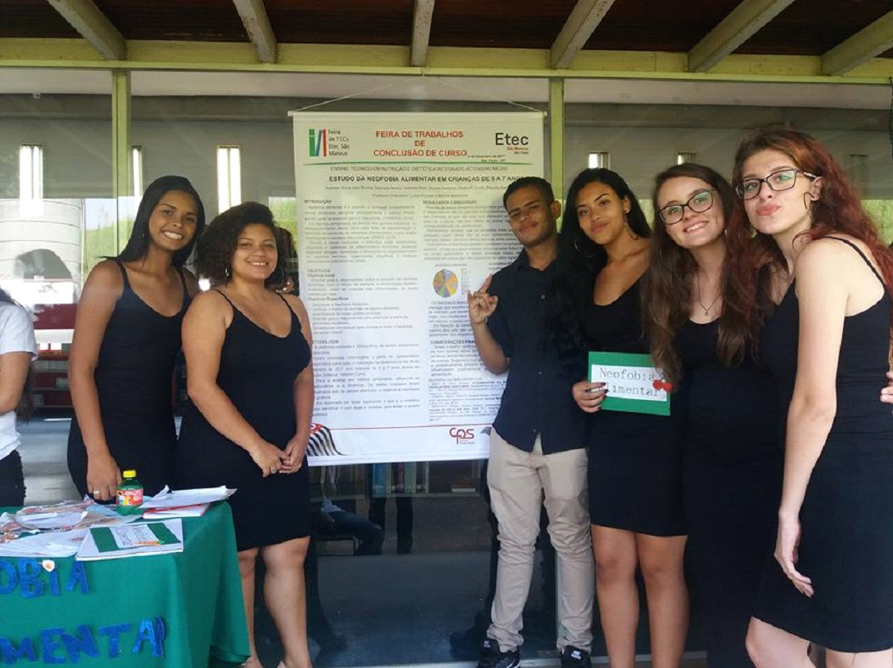

Nesta aba se apresentam os registros fotográficos de projetos, palestras, eventos, visitas técnicas feitas pelos alunos da instituição de ensino ETEC São Mateus.
No Ensino Técnico integrado foram desenvolvidas oficinas, palestras, rodas de conversas com ex-alunos e exibição de filmes. O objetivo geral foi apresentar para os alunos possibilidades profissionais, bem como fomentar a discussão sobre empregabilidade.
A ETEC São Mateus busca orientar seus alunos para uma futura vida profissional.
No Ensino técnico modular o I Fórum Integrado de Pesquisas da ETEC São Mateus, idealizado pela Direção em conjuntos com as coordenações com o objetivo proporcionar aos alunos vivências acadêmicas cientificas promovendo o intercâmbio de conhecimentos entre pesquisadores e alunos. Nesse espaço foram facilitadas as discussões de tópicos contemporâneos pertinentes às áreas profissionais em destaque.
Nós da ETEC São Mateus, proporcionamos vivencias acadêmicas aos alunos , além de intercambio de conhecimento.
No aniversario de 6 anos da ETEC São Mateus foi feito um enorme bolo para comemorar esse dia especial.
Feira do Estudante – Expo CIEE 2016 – alunos da 3ª série do ETIM da Etec São Mateus. – 20/05/2016
É normal a ETEC proporcionar visitas para seus alunos adquirirem conhecimento extra.
O Objetivo da visita foi conhecer as dependências do aeroporto e observar os conceitos relacionados à Saúde e Segurança ampliando e difundindo o conhecimento.
Conhecemos o apoio da FAB – Força Aérea Brasileira e o Corpo de Bombeiro direcionado para acidentes e incidentes de aviões.
Os alunos do curso técnico de segurança do trabalho fizeram uma visita técnica para lhes proporcionarem conhecimentos e experiencias sobre a profissão, acidentes e incidentes.
Palestra “A influência do Marketing no Comportamento de Consumo” para as turmas do 1º e 2º ADM módular com a Professora Juliana Soares- 0/ju/2016.
Temos professores especializados que lhe ensinarão tudo que você precisa saber sobre marketing.
Apresentação do “Planejamento do Trabalho de Conclusão de Curso” dos ETIMs de Administração e Informática para Internet nos dias 15 e 17 de Junho de 2016.
Na ETEC temos toda uma preparação para o trabalho de conclusão de curso. Antes de começar a fazer o TCC os alunos precisam preparar o planejamento do TCC, se for aprovado os alunos começam a preparar seus TCC’s.
Peça teatral “O MONGE E O EXECUTIVO”
O conceito inovador de liderança servidora tem revolucionado diversas escolas de pensadores, influenciado renomados líderes e formadores de opinião em inúmeros países. Onde você lidera? Na família? No trabalho? Na comunidade? Na igreja?
A ETEC São Mateus proporcionou uma visita ao teatro, e desta vez assistiram a peça “O MONGE E O EXECUTIVO”.
Nutrileste 2016. Um Sucesso!! Evento comemorativo em começarão ao dia do Técnico em Nutrição e Dietética realizado pelas ETECs São Mateus, Camargo Aranha, Cidade Tiradentes e Guaianazes. Parabéns aos palestrantes, organizadores e alunos
Neste dia nós e outras ETECs comemoramos o dia do técnico em Nutrição e Dietética.
Confira as fotos da integração realizada na primeira semana letiva com alunos ingressantes das turmas de ETIM (Ensino Técnico Integrado ao Médio). Sejam todos muito bem-vindos!
Damos as boas vindas aos novos etequianos, os que obtiveram os melhores resultados dentre tantos concorrentes.
No dia 18/04/17 a Turma do ETIM de Segurança do Trabalho participou da visitação técnica realizada a Empresa Carbocloro em Cubatão – Projeto Fábrica Aberta. A visita foi guiada pelos profissionais da área e foi apresentado aos alunos o processo de fabricação do cloro, os riscos existentes no ambiente de trabalho, as medidas de proteção coletiva e individual, bem como os procedimentos adotados para o controle de emergência e acidentes que envolvem a fabricação do cloro.
Os alunos de segurança do trabalho realizaram uma visita técnica á uma fabrica de cloro, e lá foi lhes apresentados pelos profissionais medias de segurança tanto individual quanto coletiva.
No dia 07/04/17 a turma do Modular de TST, realizou uma Visita Técnica ao Centro de Formação e Aperfeiçoamento de Bombeiros, com o objetivo em desenvolver ações de proteção ativa e passiva na empresa. Identificar e monitorar a proteção ativa existente na empresa. Reconhecer as características da proteção passiva. Aplicar ações de proteção ativa e passiva na empresa.
Os alunos de segurança do trabalho fizeram uma visita técnica a um centro de aprendizagem de bombeiros para aprenderem a reconhecer, monitorar e aplicar proteção ativa e passiva na empresa.
O ETIM de Segurança do Trabalho visitou as instalações da CONCRESERV, onde foi apresentado aos alunos o processo de fabricação do cimento usinado, os riscos existentes no ambiente de trabalho, as medidas de proteção coletiva e individual, bem como os procedimentos adotados para o controle de emergência e acidentes que envolvem a fabricação do cimento.
Os alunos de segurança do trabalho visitaram uma fábrica de cimento, onde foram advertidos dos riscos no ambiente de trabalho e as formas de proteção individual e coletiva.
No dia 06/12/2017 os Cursos Técnicos Integrados apresentaram os Trabalhos de Conclusão de Curso desenvolvidos durante o ano. Pela primeira vez a apresentação ocorreu em formato de feira; o evento ocorreu na Biblioteca Pública Milton Santos.
O dia em que os alunos mais ficam ansiosos, pois a responsabilidade é gigantesca. Os alunos finalmente apresentam seus TCCs concluídos e que serão avaliados e assim aprovados ou não pelos avaliadores.